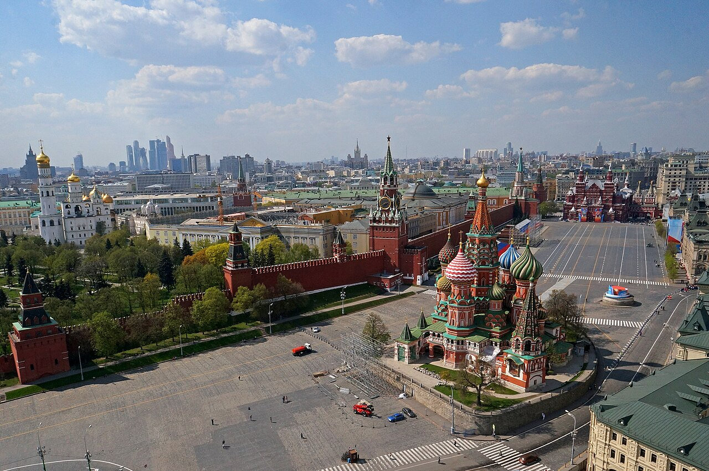
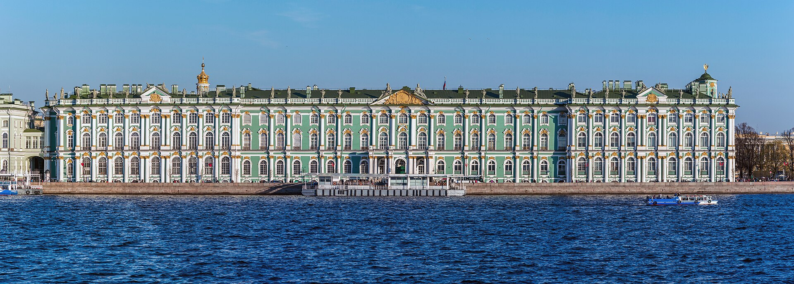
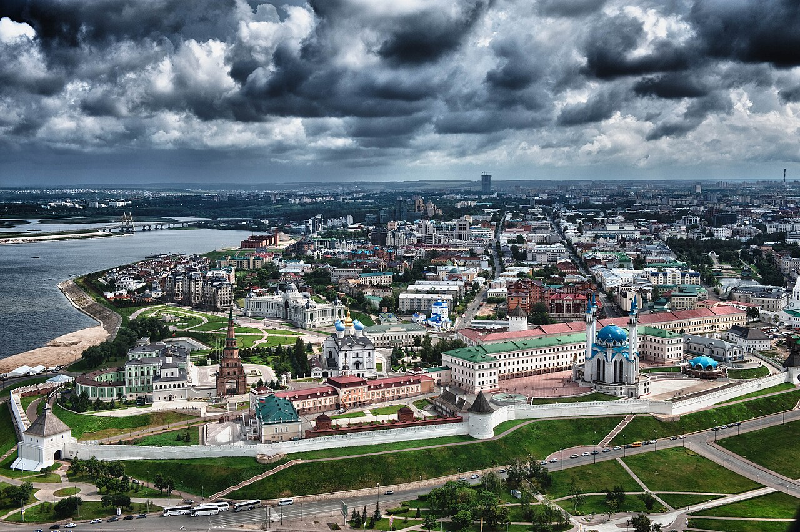
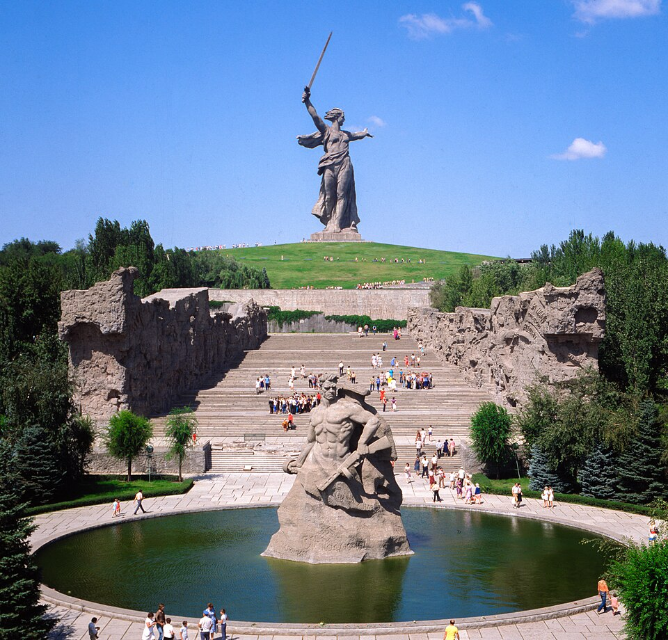
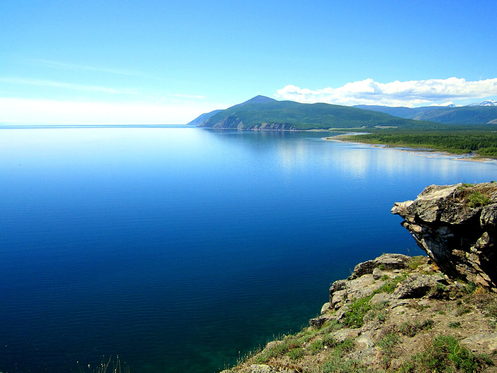
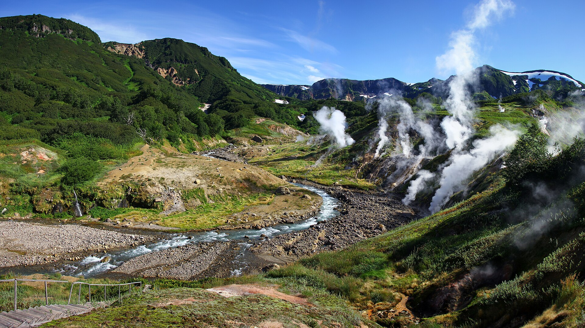

MOSCOW
クレムリンと赤の広場
モスクワの中心にある赤の広場は、クレムリンの城壁に沿って広がっています。周囲の歴史的な建物とともに、街を象徴する景観を形づくっています。
歴史ある街並みから湖や間欠泉まで。6つの名所を写真で紹介します。

モスクワの中心にある赤の広場は、クレムリンの城壁に沿って広がっています。周囲の歴史的な建物とともに、街を象徴する景観を形づくっています。

サンクトペテルブルクにある、芸術と文化の歴史を紹介する国立美術館です。先史時代から20世紀までの幅広い作品を通して、世界の芸術にふれることができます。

カザンの古い歴史を伝える城塞です。白い石の城壁や宗教建築など、さまざまな時代の建物が集まる、街を代表する名所です。

ヴォルゴグラードにある、スターリングラードの戦いで激戦の舞台となった丘です。「母なる祖国が呼んでいる」像を中心とする記念施設があり、戦没者を追悼する場所となっています。

東シベリア南部にある、世界で最も深い湖です。湖とその周辺には固有の動植物が多く生息し、独自の生態系が育まれています。

カムチャツカのクロノツキー自然保護区にある谷です。深い渓谷に間欠泉や温泉、泥の噴出口などが集まり、変化に富んだ自然の景観が広がっています。